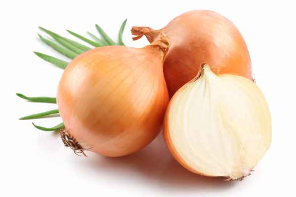
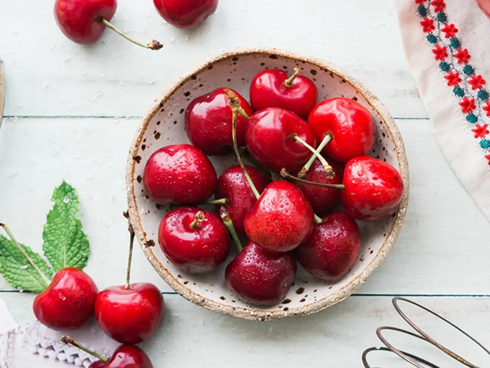
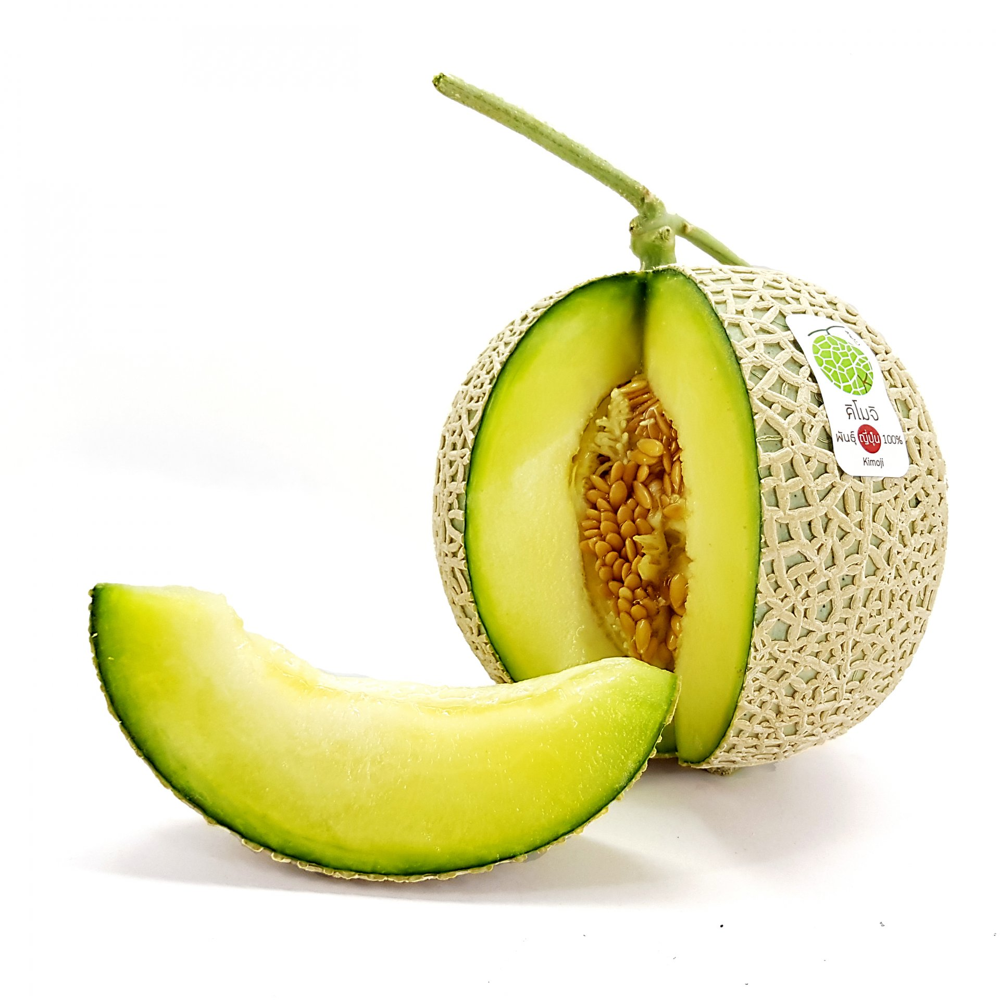
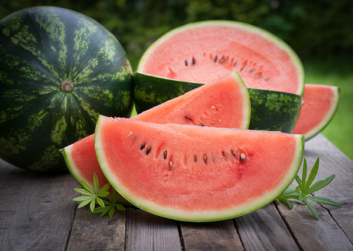
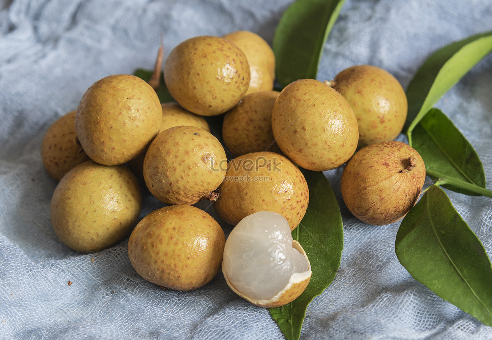

ผัก
| Bean บีน ถั่ว |
Cabbage แค๊บ-บิจ กะหล่ำ |
Carrot แค๊-เริท หัวผักกาด |
 |
||
| Chili ชิ๊-ลิ พริก |
Cucumber คิ๊วคัม-เบอะ แตงกวา |
Egg plant เอก-แพล๊นท มะเขือ |
| Garlic ก๊า-ลิค กระเทียม |
Lemon เล๊ะ-เมิน เลมอน |
Lettuce เล็ท-ทิส ผักกาดหอม |
|  | ||
| Long bean ลอง-บีน ถั่วฝักยาว |
Onion อั๊น-เนียน หอม |
Potato โพ-เท๊-โท มันฝรั่ง |
| Tomato โท-เม๊-โท มะเขือเทศ |
Acacia pennata อะเค๊เชอะ-เพ็นนะทะ ชะอม |
Angleก luffa แอ็งเกิลดึ-ลู๊ฟะ บวบเหลี่ยม |
| Arugula อะรู๊-กะละ ผักสลักร็อคเก็ต |
Asparagus อะสแป๊-ระกัส หน่อไม้ฝรั่ง |
Baby corn เบ๊บิ-คอน ข้าวโพดฝักอ่อน |
| Bamboo shoot แบ๊มบู-ชูท หน่อไม้ |
Basil เบ๊-เซิล ใบโหระพา |
Bean sprout บีน-สเปร๊าท ถั่วงอก |
| Sweet pepper สวีท-เพ็พเพอะ พริกหวาน |
Bird chilli เบิด-ชิ๊ลลิ พริกขี้หนู |
Bitter melon บิ๊ทเทอะ-เม็ลเลิน มะระ |
| Black bean แบล็ค-บีน ถั่วดำ |
Black mushroom แบล็ค-มั๊ชรูม เห็ดหอม |
Bok choy บ็อค-ชอย ผักกวางตุ้งจีน |
 |
||
| Broccoli บร๊อค-เคอะลิ บรอกโคลี |
Brussels sprout บรั๊สเซิลซ-สเปร๊าท กะหล่ำดาว |
Cabbage แค๊บ-บิจ กะหล่ำปลี |
| Calabash แค๊เลอะ-แบช น้ำเต้า |
Carrot แค๊-เริท แครอท |
Cashew nut แค๊ชู-นัท เม็ดมะม่วงหิมพานต์ |
| Cassava เคอะซ๊าวะ มันสำปะหลัง |
Cauliflower ค๊อลิเฟลาเวอะ กะหล่ำดอก |
Celery เซ็ลเลอะริ คึ่นฉ่ายฝรั่ง |
| Chaplu leaf ชะพลู-ลีฟ ใบชะพลู |
Chard ชาด ผักกาดก้านแดง |
Chayote เชโย๊ทิ ฟักแม้ว |
| Chili pepper ชิ๊ลลิ-เพ็พเพอะ พริกหยวก |
Yam แยม มันเทศ |
Chinese broccoli ไชนี๊ส-บร็อคเคอะลิ คะน้า |
| Chinese cabbage ไชนี๊ส-แค๊บบิจ ผักกาดขาวปลี |
Coriander คอริ-แอ๊นเดอะ ผักชี |
Culantro คูล๊าน-โทร ผักชีฝรั่ง |
 |
||
| Dill ดิล ผักชีลาว |
Enoki mushroom เอ๊ะโนะคิ-มั๊ชรูม เห็ดเข็มทอง |
Fingerroot ฟิ๊ง-เกอะรูท กระชาย |
 |
||
| Galangal แก๊เลิน-แกล ข่า |
Ginger จิ๊น-เจอะ ขิง |
Goat pepper โกท-เพ็พเพอะ พริกชี้ฟ้า |
| Gourd กอด บวบ |
Green bean กรีน-บีน ถั่วแขก |
Green onion กรีน-เอิ๊นเนียน ต้นหอม |
 |
||
| Hairy eggplant แฮ๊ริ-เอ๊กแพลนทึ มะอึก |
Holy basil โฮ๊ลิ-แบ๊เซิล ใบกะเพรา |
Horse tamarind ฮอส-แท็มเมอะรินด กระถิน |
 |
||
| Ivy gourd ไอ๊วิ-กอด ผักตำลึง |
Kaffir lime แค๊ฟเฟอะ-ไลม มะกรูด |
Kohlrabi โคล-ร๊าบิ กะหล่ำปม |
| Lemongrass เล๊ะเมิน-กราส ตะไคร้ |
Lime ไลมฺ มะนาว |
Mushroom มั๊ช-รูม เห็ด |
 |
||
| Okra โอ๊คระ ผักกระเจี๊ยบ |
Parsley พ๊าส-ลิ พาสลีย์ |
Pea พี ถั่วลันเตา |
| Pea eggplant พี-เอ๊กแพลนท มะเขือพวง |
Peanut พี๊-นัท ถั่วลิสง |
Pepper เพ็พ-เพอะ พริกไทย |
| Peppermint เพ็พ-เพอะมินท สะระแหน่ |
Pumpkin พั๊ม-คิน ฟักทอง |
Radish แร๊-ดิช หัวไชเท้า |
| Red bean เรด-บีน ถั่วแดง |
Sesame เซะซะมิ งา |
Shallot ชะ-ล๊อท หอมแดง |
 |
||
| Snake gourd สเนค-กอด บวบงู |
Soybean ซ๊อย-บีน ถั่วเหลือง |
Spinach สปิ๊-นิช ผักโขม |
 |
||
| Sponge gourd สปันจ-กอด บวบหอม |
Straw mushroom สตรอ-มั๊ชรูม เห็ดฟาง |
Sweet basil สวีท-เบ๊เซิล ใบโหระพา |
| Taro ท๊าโร เผือก |
Water mimosa ว๊อเทอะ-มิโม๊ซะ ผักกระเฉด |
Water Spinach ว็อเทอะ-สปิ๊นิช ผักบุ้ง |
| Watercress ว๊อเทอะ-เคร็ส สลัดน้ำ |
Winged bean วิงดึ-บีน ถั่วพู |
Winter melon วิ๊นเทอะ-เม็ลเลิน ฟัก |
| White jelly fungus ไวทฺ-เจลลิ-ฟังกัซฺ เห็ดหูหนูขาว |
Turmeric เทอ-มอริค ขมิน |
Zucchini สุคี๊นิ แตงกวาญี่ปุ่น |
ผลไม้
| Apple แอพ-เพิล แอปเปิ้ล |
Apricot แอพ-ระคอท แอปริคอท |
Avocado แอฟวะคา-โด อะโวคาโด |
| Banana บะแนน-นะ กล้วย |
Blueberry บลู-แบหริ บลูเบอร์รี่ |
Breadfruit เบรด-ฟรุท สาเก |
|  | ||
| Cantaloupe แคน-ทาลูพฺ แคนตาลูป |
Cherry เชอ-รี เชอรี่ |
Coconut โคโค-นัท มะพร้าว |
| Corn คอรนฺ ข้าวโพด |
Custard apple คัสธาด-แอพเพิล น้อยหน่า |
Durian ดิว-เรียน ทุเรียน |
 |
||
| Grape เกรพ องุ่น |
Guava กวา-ฝะ ฝรั่ง |
Kiwi คี-วี กีวี |
| Langsat แลง-แซทฺ ลางสาด |
Lychee ลีช-ชี ลิ้นจี่ |
Mango แมง-โก มะม่วง |
|  | ||
| Melon เมล-เลิน เมลอน |
Orange ออ-เร็นจ ส้ม |
Papaya พะพา-ยะ มะละกอ |
| Passion fruit แพชเชิน-ฟรูท เสาวรส |
Peach พีช ลูกท้อ |
Persimmon เพอซิม-เมิน ลูกพลัม |
| Pineapple ไพนฺแอพ-เพิล สับปะรด |
Pomegranate พอม-แกรนนิท ทับทิม |
Raspberry แรซ-เบอรี ราสเบอร์รี่ |
 |
||
| Rose apple โรซ-แอพเพิล ชมพู่ |
Sapodilla แซโพ-ดิลลา ละมุด |
Star fruit สตารฺ-ฟรูท มะเฟือง |
| Star gooseberry สตารฺ-กูซฺ-แบริ มะยม |
Strawberry สตรอ-แบรี สตรอเบอร์รี่ |
Santol ซัน-โทลฺ กระท้อน |
|  | ||
| Tamarind แทม-มะรินดฺ มะขาม |
Water chestnut วอเทอรฺ-เชสนัทฺ แห้ว |
Watermelon วอเทอะ-เมลเลิน แตงโม |
 |
||
| Chinese pear ไชนีส-แพรฺ สาลี่ |
Date palm เดท-พาล์ม อินทผลัม |
Jackfruit แจค-ฟรุท ขนุน |
|  | ||
| Jujube จูจูบฺ พุทรา |
Longan ลอน-แกน ลำไย |
Mangosteen แมง-โกสธีนฺ มังคุด |
| Marian plum แมเรียน-พลัม มะปราง |
Muskmelon มัสคฺ-เมลเลิ่นฺ แตงไทย |
Pomelo พอม-เมะโล ส้มโอ |
 |
||
| Blackberry แบลค-เบอรี แบล็คเบอรี่ |
Rambutan แร็มบู-แท็น เงาะ |
Southern langsat ซัฑเฑินฺ-แลงแซ็ท ลองกอง |